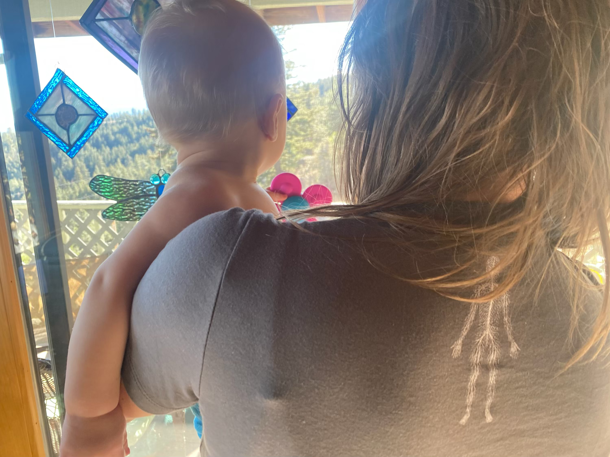

We didn't start a brand. We made a reminder.
In a world racing to automate everything, we wanted to make one thing clear: the most sophisticated intelligence on the planet already lives inside you.
HI — Human Intelligence — was born from a simple observation: we've been so busy building artificial intelligence that we've forgotten the original kind. The kind that beats your heart a hundred thousand times a day without you thinking about it. The kind that heals a wound, catches a stumble, and knows when something feels right before your mind catches up.
This isn't anti-technology. We like our phones. We like our tools. But we also know that no algorithm will ever replicate the feeling of bare feet on warm ground, the intelligence of a body moving through space, or the quiet knowing that comes when you stop scrolling and start breathing.

HI lives at the intersection of movement, embodiment, and reclaiming the wisdom the body already has. Every piece we make is designed to be worn by people who move — who dance, stretch, walk, breathe, play, rest, and exist fully in their skin.
The clothes are simple. The message is the point. When you pull on an HI shirt, you're putting on a reminder: trust the intelligence you already carry.
We started with shirts and hats. We'll keep going. But the mission stays the same: make the invisible visible. Remind people that they are, already, enough.
Movement artist, educator, and founder of Experiments in Rhythm. 25 years deep in movement — from Breaking and House to Capoeira and Contemporary — teaching and performing across 20+ countries. Alex creates spaces where dance becomes ritual, research, and community medicine. He brings a fresh, integrative approach rooted in rhythm, curiosity, and embodied intelligence.
Born and raised in Barbados, Celia is a professional dancer, choreographer, Pilates teacher, and founder of The Conscious Nest. A lifelong student of yoga, a trained homeopath, and a practitioner of Thai Yoga Massage, she bridges Eastern philosophy and embodied healing. Her commitment to personal evolution and empowering others to expand lies at the core of everything she offers.
Your body already knows. Now let the world see it.
Shop HI